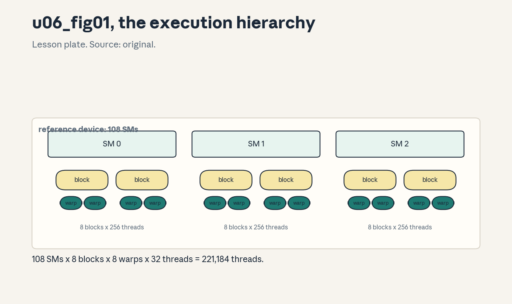
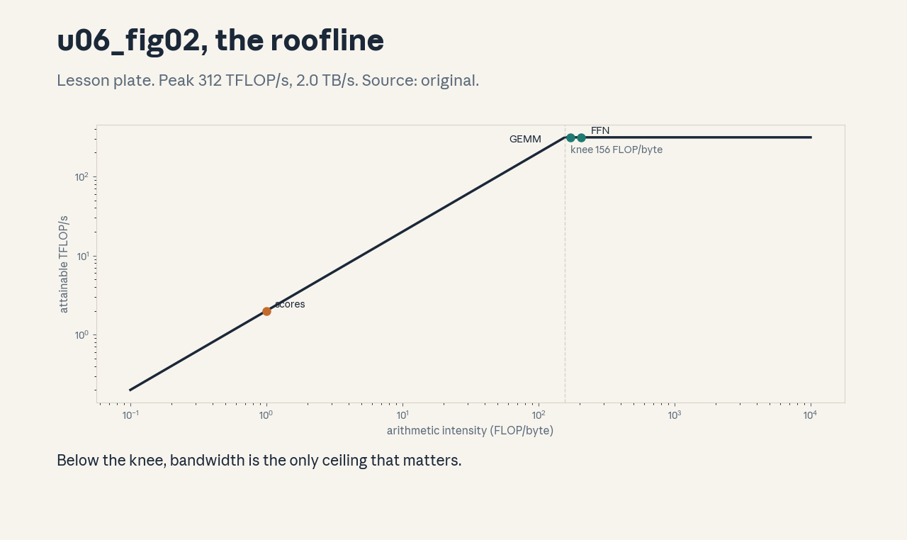
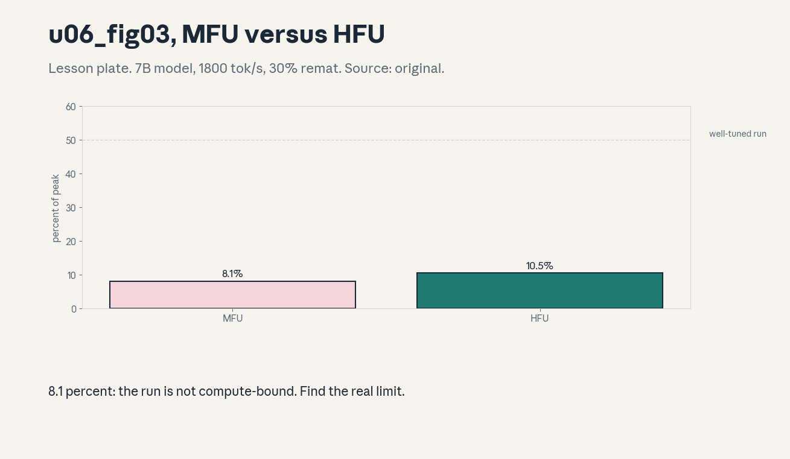

U06 · GPU/TPU architecture and profiling
U06 , GPU/TPU architecture and profiling
Prerequisites: P06, P07, P14, P16. Bridge links in ../prerequisites.md.
Session: cross-cutting branch (reported as profiling in the course
sessions, exact session mapping in ../course_map.md).
Claim class: REQUESTED-BRANCH. All leaves PLANNED / SOURCE ATTRIBUTION
PENDING. Notation: see ../notation_and_shapes.md.
Standing assumptions (stated, not sourced)
All compute in this unit uses one reference device, stated here: peak bf16 dense 312 TFLOP/s, HBM bandwidth 2.0 TB/s, HBM 80 GB, 108 SMs. These are lesson assumptions for the toy arithmetic, not measured benchmarks. No GPU exists on this box, every number is numpy-computed from the assumptions.
Local remediation , latency, bandwidth, throughput
Read this if diagnostic items D9 or D12 were not full marks. Latency is the time for one operation, bandwidth is bytes per second, throughput is operations per second. A kernel is memory-bound when its arithmetic intensity (FLOP per byte) is below peak-FLOP/bandwidth, it is compute-bound above it. The roofline model plots attainable throughput as min(peak, intensity * bandwidth).
Worked check: intensity 1.0 FLOP/byte on the reference device gives
min(312, 1.0*2.0) = 2.0 TFLOP/s: 1 percent of peak (from
assets/compute_u06.py, executed 2026-10-06).
Assessment: at what intensity does the reference device switch from
memory-bound to compute-bound? Key: ../keys/u06_answers.md R1.
C01: SM, block, thread, warp mapping
Leaf id cs336-U06-C01. Claim class REQUESTED-BRANCH.
Status PLANNED / SOURCE ATTRIBUTION PENDING.
-
Source mapping, scope, objectives, dependencies. Branch. Scope: the execution hierarchy. Objectives: map work onto SMs, define occupancy. Depends on P06, P07.
-
Motivating question and toy. Question: what runs where? Toy: 256 threads/block, 8 blocks/SM, 108 SMs = 221,184 active threads (2.0K per SM) on the reference device.
-
Mental model. A GPU has SMs, each SM runs thread blocks, blocks split into warps of 32 threads that execute in lockstep. Occupancy is the fraction of the SM’s thread capacity that is active: latency hiding needs enough warps to cover memory stalls.
-
Objects, symbols, units, shapes, assumptions. SM count 108 (assumption). Warp = 32 threads. Assumption: the kernel is written to fill blocks.
-
Derivation / mechanism. Active threads = threads/block * blocks/SM * SMs. Occupancy = active / max threads per SM. More warps per SM means more independent work to schedule during a stall.
-
Computed example. From
assets/compute_u06.py(executed 2026-10-06): 221,184 threads, 2.0K per SM. -
Algorithm and reference implementation. The mapping is a launch configuration:
kernel<<<blocks, threads>>>()assigns blocks to SMs. No numpy model on this box, the lab checks the arithmetic. -
Correctness checks and expected output. Thread counts divide evenly into warps (256 = 8 warps). Expected outputs in the lab key.
-
Costs. Launch overhead is microseconds, the cost that matters is idle SMs from too little work.
-
Nearest alternative and selection boundary. CPU threads (few, heavy). GPU threads (many, light). The hierarchy is the GPU’s answer to latency.
-
Failure case and counterexample. One block of 32 threads on a 108-SM device: 107 SMs idle. The assumption “the GPU is fast” breaks when the work does not fill it, small-batch inference is the classic case.
-
Research reading and falsifiable extension. Reading: GPU programming guides (primary: vendor docs). Extension: predict the active-thread count for 512-thread blocks, hypothesis: the formula scales linearly until a resource limit.
-
Assessment. (a) Recall: the hierarchy levels. (b) Oral ladder: define a warp, compute active threads, justify 32-wide lockstep, write the launch, compare with CPU threads, debug the idle-SM case, critique the fill assumption, design the 512-thread prediction. (c) Transfer: a kernel launches 10 blocks. How many SMs stay idle on the reference device? Answers:
../keys/u06_answers.mdA1. -
Lab and exercises. Lab U06 task 1 checks the thread arithmetic and the idle-SM computation. See
../labs/u06_lab.md. -
Visuals. Figure u06_fig01: lesson plate, the SM/block/warp hierarchy. Source: original. Render:
assets/render_u06.py.

C02: Memory hierarchy
Leaf id cs336-U06-C02. Claim class REQUESTED-BRANCH.
Status PLANNED / SOURCE ATTRIBUTION PENDING.
-
Source mapping, scope, objectives, dependencies. Branch. Scope: where data lives. Objectives: order the memories by size and speed, state what each is for. Depends on P06, P07.
-
Motivating question and toy. Question: why not keep everything in registers? Toy: 80 GB HBM holds 1,220,703 KV tokens at 65,536 bytes/token (GQA-8, d=2048, L=32, bf16), registers hold kilobytes per thread.
-
Mental model. Registers (fastest, KB per thread) hold the working set. Shared memory (tens of KB per block) is programmer- managed scratch. HBM (80 GB, 2 TB/s) holds the model and the cache. TPU: HBM plus on-chip vector/matrix units with software- managed memory.
-
Objects, symbols, units, shapes, assumptions. Bytes and bytes/s. Assumption: the reference device numbers.
-
Derivation / mechanism. Every byte the kernel touches must travel HBM -> L2 -> shared/registers. Arithmetic intensity measures how much math amortizes each byte moved, the hierarchy rewards reuse (tiling, U07).
-
Computed example. From
assets/compute_u06.py(executed 2026-10-06): 65,536 bytes/token, 1,220,703 tokens fit in 80 GB. -
Algorithm and reference implementation. The lab computes the fit for other (g, d, L) choices. No device code on this box.
-
Correctness checks and expected output. Doubling g halves the fit, fp16 versus bf16 identical bytes. Expected outputs in the lab key.
-
Costs. HBM capacity bounds context length (U04-C01), HBM bandwidth bounds decode speed.
-
Nearest alternative and selection boundary. CPU DRAM (larger, slower), TPU HBM (same role, different chip). The hierarchy shape is the same.
-
Failure case and counterexample. Register spilling: too many live values push registers to slow local memory and the kernel slows 2-5x with no code change except variable count. The assumption “more unrolling is better” breaks at the register limit.
-
Research reading and falsifiable extension. Reading: vendor architecture whitepapers (primary). Extension: fit the KV cache for MQA versus MHA, hypothesis: 8x more tokens for MQA.
-
Assessment. (a) Recall: the three levels and their roles. (b) Oral ladder: define shared memory, compute the token fit, justify reuse, write the fit formula, compare TPU with GPU, debug spilling, critique the reference numbers, design the MQA/MHA comparison. (c) Transfer: context must double on fixed HBM. Name two levers. Answers:
../keys/u06_answers.mdA2. -
Lab and exercises. Lab U06 task 2 computes KV fits and the spill rule. See
../labs/u06_lab.md. -
Visuals. Audit row: the hierarchy table (level, size, speed, role). No figure, tabular claim.
C03: Roofline model
Leaf id cs336-U06-C03. Claim class REQUESTED-BRANCH.
Status PLANNED / SOURCE ATTRIBUTION PENDING.
-
Source mapping, scope, objectives, dependencies. Branch. Scope: bounding kernel performance. Objectives: compute the roofline, classify kernels. Depends on P07, U02-C10.
-
Motivating question and toy. Question: is this kernel slow because of math or memory? Toy from
compute_u06.py: attention scores (intensity 1.0) -> 2.0 TFLOP/s, memory-bound, GEMM (170.7) -> 312 TFLOP/s, compute-bound. -
Mental model. Attainable = min(peak FLOP/s, intensity * bandwidth). The knee is at peak/bandwidth = 156 FLOP/byte on the reference device. Below the knee, only bandwidth matters, above it, only math.
-
Objects, symbols, units, shapes, assumptions. Intensity in FLOP/byte. Assumption: the reference peak and bandwidth.
-
Derivation / mechanism. Time >= max(FLOP/peak, bytes/bw), so throughput <= min(peak, intensity*bw). The U02 intensities plug straight in.
-
Computed example. From
assets/compute_u06.py(executed 2026-10-06): 2.0 TFLOP/s (1% of peak) for scores, 312.0 (100%) for GEMM and FFN. -
Algorithm and reference implementation.
roofline(intensity): three lines. The lab classifies a kernel list. -
Correctness checks and expected output. Intensity 156 -> exactly the knee (312). Monotonic in intensity below the knee. Expected outputs in the lab key.
-
Costs. The model is free and predicts within ~2x before any profiling.
-
Nearest alternative and selection boundary. Full simulation (accurate, expensive). Roofline is the first-pass tool.
-
Failure case and counterexample. A kernel at 50 percent of roofline with intensity 200: the model says compute-bound, but the real limit is occupancy or instruction overhead. The assumption “only two limits exist” breaks, the roofline is an upper bound, not a diagnosis.
-
Research reading and falsifiable extension. Reading: the roofline paper (Williams et al., 2009, primary). Extension: classify the U02 intensities, hypothesis: only scores and softmax sit below the knee.
-
Assessment. (a) Recall: the formula and the knee. (b) Oral ladder: define intensity, compute the scores bound, justify the min, implement, compare with simulation, debug the 50-percent case, critique the two-limit assumption, design the U02 classification. (c) Transfer: bandwidth doubles. Which kernels speed up? Answers:
../keys/u06_answers.mdA3. -
Lab and exercises. Lab U06 task 3 classifies kernels and finds the knee. See
../labs/u06_lab.md. -
Visuals. Figure u06_fig02: lesson plate, the roofline curve with the toy kernels placed. Source: original. Render:
assets/render_u06.py.

C04: Occupancy and latency hiding
Leaf id cs336-U06-C04. Claim class REQUESTED-BRANCH.
Status PLANNED / SOURCE ATTRIBUTION PENDING.
-
Source mapping, scope, objectives, dependencies. S-branch. Scope: keeping SMs fed. Objectives: explain why occupancy matters, compute it. Depends on C01.
-
Motivating question and toy. Question: the math says 312 TFLOP/s but the kernel gets 150. Why? Toy: halving active warps halves the latency-hiding ability, memory stalls go uncovered.
-
Mental model. Memory loads take hundreds of cycles. The SM hides this by switching to other warps. Occupancy is the fraction of maximum warps resident, low occupancy means stalls with no warp to switch to.
-
Objects, symbols, units, shapes, assumptions. Warps per SM. Assumption: the workload has enough parallelism to offer.
-
Derivation / mechanism. Little’s-law style: needed warps ~= latency * throughput. Fewer resident warps than needed leaves bandwidth idle.
-
Computed example. Lab table: occupancy versus register and shared-memory usage for a toy kernel.
-
Algorithm and reference implementation. The occupancy calculator: given registers/thread and shared/block, compute resident blocks. About 10 lines.
-
Correctness checks and expected output. More registers -> fewer blocks, the calculator reproduces the vendor table on the toy. Expected outputs in the lab key.
-
Costs. Tuning occupancy is free at launch time, the cost is engineering time.
-
Nearest alternative and selection boundary. Instruction-level parallelism (same warp, independent ops). Occupancy is the thread-level answer.
-
Failure case and counterexample. 100 percent occupancy with low intensity: the kernel is still memory-bound, occupancy cannot fix a bandwidth limit. The assumption “more occupancy is always better” breaks, past enough warps there is no gain.
-
Research reading and falsifiable extension. Reading: CUDA occupancy documentation (primary). Extension: sweep the toy calculator, hypothesis: a plateau past the latency-hiding point.
-
Assessment. (a) Recall: the latency-hiding mechanism. (b) Oral ladder: define occupancy, compute resident blocks, justify warp switching, implement the calculator, compare with ILP, debug the low-occupancy kernel, critique the plateau, design the sweep. (c) Transfer: the kernel is memory-bound at full occupancy. What next? Answers:
../keys/u06_answers.mdA4. -
Lab and exercises. Lab U06 task 4 implements the occupancy calculator. See
../labs/u06_lab.md. -
Visuals. Audit row: the occupancy table. No figure, tabular claim.
C05: Measurement methodology
Leaf id cs336-U06-C05. Claim class REQUESTED-BRANCH.
Status PLANNED / SOURCE ATTRIBUTION PENDING.
-
Source mapping, scope, objectives, dependencies. S-branch. Scope: trustworthy timing. Objectives: state the warmup/sync/ statistics rules. Depends on P06.
-
Motivating question and toy. Question: the first timing says 10 ms, the second says 3 ms. Which is right? Toy: the lab models warmup effects and shows the median-of-N rule.
-
Mental model. GPUs execute asynchronously: time with device sync, warm up (caches, clocks), then take the median of many runs. Report the setup (shapes, dtype, device state) or the number is meaningless.
-
Objects, symbols, units, shapes, assumptions. Milliseconds, medians, N>=30. Assumption: clocks are stable (see C11).
-
Derivation / mechanism. Async launch returns before the work finishes: unsynced timing measures launch overhead. Warmup fills caches and ramps clocks. Median rejects outliers.
-
Computed example. Lab model: run times [12, 3.1, 3.0, 3.2, 3.1] ms: first is warmup, median of the rest 3.1 ms.
-
Algorithm and reference implementation.
time_kernel(f): warmup loop, sync, timed loop, median. About 10 lines of pattern. -
Correctness checks and expected output. Median within 10 percent across repeats, warmup run excluded. Expected outputs in the lab key.
-
Costs. Minutes of benchmarking save days of wrong tuning.
-
Nearest alternative and selection boundary. Vendor profilers (nsys, ncu) for the inside view. The rules above are the floor.
-
Failure case and counterexample. Timing without sync: every kernel reports ~5 us and the “optimization” that launches fewer kernels looks like a win. The assumption “the timer measures work” breaks under asynchrony, sync is load-bearing.
-
Research reading and falsifiable extension. Reading: profiler documentation (primary). Extension: measure with and without sync on the toy model, hypothesis: 10x difference.
-
Assessment. (a) Recall: the three rules. (b) Oral ladder: define async launch, compute the median, justify warmup, implement the pattern, compare with profiler output, debug the no-sync timing, critique the stable-clock assumption, design the comparison. (c) Transfer: two kernels report 3.1 and 3.3 ms. Is the difference real? Answers:
../keys/u06_answers.mdA5. -
Lab and exercises. Lab U06 task 5 implements the timing pattern on the model. See
../labs/u06_lab.md. -
Visuals. Audit row: the timing checklist. No figure, tabular claim.
C06: GEMM shapes and batching
Leaf id cs336-U06-C06. Claim class REQUESTED-BRANCH.
Status PLANNED / SOURCE ATTRIBUTION PENDING.
-
Source mapping, scope, objectives, dependencies. S-branch. Scope: matrix-multiply performance. Objectives: explain why shape matters, use batching. Depends on C03, U02-C06.
-
Motivating question and toy. Question: same FLOPs, different speed. Why? Toy: a skinny GEMM (M=1) is memory-bound while a square one is compute-bound at equal FLOP count.
-
Mental model. GEMM efficiency depends on the (M,N,K) shape: large K gives reuse, tiny M (decode, batch 1) gives none. Batching (bigger M) moves decode toward the compute-bound regime.
-
Objects, symbols, units, shapes, assumptions. M,N,K dims. Assumption: the weight matrix is the same in both cases.
-
Derivation / mechanism. Intensity ~= 2MNK/(MN+NK+MK) bytes scaled: for M=1 this collapses to ~2K/(K+…) per byte: the weight matrix streams once per token.
-
Computed example. Lab: intensity for (M=1,N=4096,K=4096) versus (M=4096,N=4096,K=4096), the roofline classifies them.
-
Algorithm and reference implementation.
gemm_intensity(M,N,K, bytes): the formula. About 5 lines. -
Correctness checks and expected output. M=1 intensity << knee, large M intensity >> knee. Expected outputs in the lab key.
-
Costs. Batching costs latency per request (queueing) and buys throughput.
-
Nearest alternative and selection boundary. Weight-only quantization (raises intensity by shrinking bytes). Batching is the scheduling answer.
-
Failure case and counterexample. Batching to M=1024 on a latency-sensitive serving task: throughput soars, p99 latency violates the SLO. The assumption “bigger is better” breaks against the latency contract.
-
Research reading and falsifiable extension. Reading: GEMM performance literature (primary: vendor guides). Extension: sweep M and plot intensity, hypothesis: knee crossing near M=156-ish scaled.
-
Assessment. (a) Recall: the shape effect. (b) Oral ladder: define the intensity formula, compute the M=1 case, justify the collapse, implement, compare with quantization, debug the SLO violation, critique the equal-FLOP comparison, design the sweep. (c) Transfer: decode at batch 64. Compute-bound yet? Answers:
../keys/u06_answers.mdA6. -
Lab and exercises. Lab U06 task 6 sweeps M and classifies. See
../labs/u06_lab.md. -
Visuals. Audit row: the shape table. No figure, tabular claim.
C07: Scaling laws hardware and MFU
Leaf id cs336-U06-C07. Claim class REQUESTED-BRANCH.
Status PLANNED / SOURCE ATTRIBUTION PENDING.
-
Source mapping, scope, objectives, dependencies. S-branch. Scope: model FLOP utilization. Objectives: compute MFU, state what it excludes. Depends on C03, U02-C07.
-
Motivating question and toy. Question: the cluster trains at 25 TFLOP/s per GPU. Is that good? Toy from
compute_u06.py: 25.2 TFLOP/s on a 7B model at 1800 tok/s = 8.1 percent MFU. -
Mental model. MFU = achieved model FLOPs / peak device FLOPs. The numerator counts the math the model needs (2*params per token), the denominator is the device peak. 8 percent is poor, 40-60 percent is a well-tuned large run.
-
Objects, symbols, units, shapes, assumptions. Percent. Assumption: the 2*params/token FLOP model (U02-C07).
-
Derivation / mechanism. Achieved = 2 * P * tokens/s. MFU = achieved/peak. It excludes rematerialization and communication: hardware FLOP utilization (HFU) includes them.
-
Computed example. From
assets/compute_u06.py(executed 2026-10-06): 25.2 TFLOP/s, 8.1 percent MFU. -
Algorithm and reference implementation.
mfu(params, tok_s, peak): three lines. -
Correctness checks and expected output. MFU <= 100 percent, doubling tok/s doubles MFU. Expected outputs in the lab key.
-
Costs. MFU is a diagnostic, not a knob, the knobs are batch, parallelism, kernels.
-
Nearest alternative and selection boundary. HFU (includes extra FLOPs), tokens/s alone (not normalized). MFU compares across hardware.
-
Failure case and counterexample. MFU 55 percent with frequent checkpoint restarts: the metric looks healthy while the run wastes a third of its wall clock. The assumption “MFU measures the run” breaks, it measures only the compute phase.
-
Research reading and falsifiable extension. Reading: the MFU definition (primary: large-run reports). Extension: compute MFU versus HFU with 30 percent rematerialization, hypothesis: HFU > MFU by the rework factor.
-
Assessment. (a) Recall: the MFU formula. (b) Oral ladder: define the numerator, compute the toy, justify the 2*params, implement, compare with HFU, debug the restart case, critique the FLOP-model assumption, design the remat comparison. (c) Transfer: MFU 8 percent on a 7B run. Name the first three suspects. Answers:
../keys/u06_answers.mdA7. -
Lab and exercises. Lab U06 task 7 computes MFU and HFU. See
../labs/u06_lab.md. -
Visuals. Figure u06_fig03: lesson plate, MFU versus HFU bars (computed toy). Source: original. Render:
assets/render_u06.py.

C08: Interconnect topology
Leaf id cs336-U06-C08. Claim class REQUESTED-BRANCH.
Status PLANNED / SOURCE ATTRIBUTION PENDING.
-
Source mapping, scope, objectives, dependencies. S-branch. Scope: multi-GPU links. Objectives: model all-reduce time, compare link tiers. Depends on P16, U08, U09.
-
Motivating question and toy. Question: how long does a 7B gradient sync take? Toy from
compute_u06.py: ~0.02 s over 600 GB/s links, ~0.07 s over 200 GB/s links (ring model, 2x data). -
Mental model. GPUs connect in tiers: fast inside the node (hundreds of GB/s), slower across nodes (tens to hundreds of GB/s). Ring all-reduce moves ~2x the data per GPU, time ~= 2*bytes/bandwidth.
-
Objects, symbols, units, shapes, assumptions. GB/s, seconds. Assumption: the ring model and the two reference bandwidths.
-
Derivation / mechanism. Each of N GPUs sends and receives 2(N-1)/N * bytes ~= 2bytes. Time = that / link bandwidth.
-
Computed example. From
assets/compute_u06.py(executed 2026-10-06): 0.02 s and 0.07 s for 7 GB. -
Algorithm and reference implementation.
allreduce_time(bytes, bw): two lines. The lab compares tiers. -
Correctness checks and expected output. Time halves when bandwidth doubles, 2x data factor present. Expected outputs in the lab key.
-
Costs. Communication time competes with compute, overlap (U08/U09) hides it.
-
Nearest alternative and selection boundary. Tree all-reduce (lower latency, same bandwidth term). Ring is the bandwidth- optimal baseline.
-
Failure case and counterexample. A topology-unaware mapping puts heavy pairs across the slow tier: the 0.07 s becomes the step’s critical path. The assumption “bandwidth is uniform” breaks, placement matters.
-
Research reading and falsifiable extension. Reading: collective-communication analyses (primary: paper sections). Extension: model 70B (140 GB) on both tiers, hypothesis: seconds, dominating the step without overlap.
-
Assessment. (a) Recall: the ring time formula. (b) Oral ladder: define the 2x factor, compute the toy, justify the ring, implement, compare tiers, debug the placement case, critique the ring assumption, design the 70B model. (c) Transfer: the all-reduce takes 30 percent of the step. Name two fixes. Answers:
../keys/u06_answers.mdA8. -
Lab and exercises. Lab U06 task 8 models collectives and placement. See
../labs/u06_lab.md. -
Visuals. Audit row: the tier comparison table. No figure, tabular claim.
C09: Vendor claims as source-verification branches
Leaf id cs336-U06-C09. Claim class REQUESTED-BRANCH.
Status PLANNED / SOURCE ATTRIBUTION PENDING.
-
Source mapping, scope, objectives, dependencies. S-branch. Scope: treating vendor numbers as branches. Objectives: state the verification protocol for a peak-FLOP claim. Depends on C05.
-
Motivating question and toy. Question: the vendor says 624 TFLOP/s. Do you get it? Toy: the lab checks which conditions a peak claim needs (dense, right dtype, right shapes, sparsity).
-
Mental model. Peak numbers are ceilings under ideal conditions: dense math, supported dtype, large shapes, sometimes structured sparsity. Your kernel’s roofline (C03) is the honest comparison, not the vendor peak.
-
Objects, symbols, units, shapes, assumptions. TFLOP/s with conditions attached. Assumption: none, every condition is checked.
-
Derivation / mechanism. The verification protocol: (1) quote the claim with its conditions, (2) reproduce the conditions or state the deviation, (3) measure per C05, (4) report achieved versus claimed with the gap explained.
-
Computed example. Lab: the fp8 624 number needs fp8 dense GEMM at large shapes, a skinny fp8 kernel achieves a fraction.
-
Algorithm and reference implementation. A claim checklist template (markdown), filled per claim. The lab fills one.
-
Correctness checks and expected output. Every claim carries its conditions, no bare peak number appears in a report. Expected outputs in the lab key.
-
Costs. An hour of verification beats a week of tuning to a phantom target.
-
Nearest alternative and selection boundary. Third-party benchmarks (same protocol applies). Vendor claims are branches to verify, not facts to cite.
-
Failure case and counterexample. Tuning a memory-bound kernel against the dense peak: months of work for a ceiling the kernel can never touch. The assumption “the peak is the target” breaks, the roofline is the target.
-
Research reading and falsifiable extension. Reading: vendor whitepapers as primary sources for the conditions. Extension: verify one claim end to end, hypothesis: the conditions explain the gap.
-
Assessment. (a) Recall: the four protocol steps. (b) Oral ladder: define the conditions, check the fp8 claim, justify the roofline comparison, fill the template, compare with third- party, debug the phantom-target tuning, critique the checklist, design the verification. (c) Transfer: a startup claims 2x on your workload. What do you ask for? Answers:
../keys/u06_answers.mdA9. -
Lab and exercises. Lab U06 task 9 fills the claim template. See
../labs/u06_lab.md. -
Visuals. Audit row: the claim checklist. No figure, tabular claim.
C10: Precision formats and hardware support
Leaf id cs336-U06-C10. Claim class REQUESTED-BRANCH.
Status PLANNED / SOURCE ATTRIBUTION PENDING.
-
Source mapping, scope, objectives, dependencies. S-branch. Scope: dtype support on the device. Objectives: tabulate formats, state the throughput ratios. Depends on P08, U02-C12.
-
Motivating question and toy. Question: what does fp8 buy? Toy from
compute_u06.py: 624 vs 312 TFLOP/s dense (2x), and half the memory traffic of bf16. -
Mental model. Newer devices add narrow formats (fp8) with 2x the dense throughput of bf16 and half the bytes. The catch: range and precision need scaling (per-tensor or per-block) and the kernels must exist.
-
Objects, symbols, units, shapes, assumptions. E4M3/E5M2 fp8 variants. Assumption: the reference 2x ratio.
-
Derivation / mechanism. Halving bytes doubles intensity at fixed FLOPs: memory-bound kernels speed up even before the 2x math rate matters.
-
Computed example. From
assets/compute_u06.py(executed 2026-10-06): 312 -> 624 TFLOP/s, traffic halved. -
Algorithm and reference implementation. The format table with bits, range, and throughput ratio. The lab extends it.
-
Correctness checks and expected output. Ratios multiply correctly: fp8 GEMM at the roofline min. Expected outputs in the lab key.
-
Costs. Quantization engineering (scaling, kernels) versus free 2x on paper.
-
Nearest alternative and selection boundary. bf16 (safe default), int8 (inference). fp8 for training throughput where supported.
-
Failure case and counterexample. fp8 without scaling on a model with outlier activations: overflows, loss diverges. The assumption “narrower is a free lunch” breaks, scaling is part of the format.
-
Research reading and falsifiable extension. Reading: fp8 format specifications (primary). Extension: model the intensity doubling for the M=1 GEMM, hypothesis: still memory-bound, 2x faster.
-
Assessment. (a) Recall: the format table. (b) Oral ladder: define E4M3, compute the ratio, justify the intensity doubling, extend the table, compare with int8, debug the overflow, critique the 2x assumption, design the M=1 model. (c) Transfer: the device lacks fp8. What is the fallback plan? Answers:
../keys/u06_answers.mdA10. -
Lab and exercises. Lab U06 task 10 extends the format table and models the M=1 case. See
../labs/u06_lab.md. -
Visuals. Audit row: the format table. No figure, tabular claim.
C11: Power and thermal throttling
Leaf id cs336-U06-C11. Claim class REQUESTED-BRANCH.
Status PLANNED / SOURCE ATTRIBUTION PENDING.
-
Source mapping, scope, objectives, dependencies. S-branch. Scope: the failure case. Objectives: explain throttling, state the detection. Depends on C05.
-
Motivating question and toy. Question: the kernel slowed down overnight with no code change. Toy: the lab models a clock drop from 1.4 GHz to 1.0 GHz and its 29 percent throughput hit.
-
Mental model. Devices cap power and temperature by lowering clocks. A throttled device reports the same kernel at lower throughput, timings drift and comparisons lie.
-
Objects, symbols, units, shapes, assumptions. GHz, watts, degrees. Assumption: the toy clock numbers.
-
Derivation / mechanism. Throughput scales with clock for compute-bound kernels: 1.0/1.4 = 0.71, a 29 percent hit.
-
Computed example. Lab: the 29 percent number and the detection rule (repeated baseline timing drifting down).
-
Algorithm and reference implementation. The detection rule: time a fixed microbenchmark before and after the run, flag a drop over 5 percent.
-
Correctness checks and expected output. The rule fires on the toy throttle and stays quiet on noise. Expected outputs in the lab key.
-
Costs. A throttled run wastes the whole allocation, detection is cheap.
-
Nearest alternative and selection boundary. Power-capped scheduling (cluster-level). Detection is the user-level answer.
-
Failure case and counterexample. Blaming the code for a throttled slowdown: a week of tuning against a moving target. The assumption “the device is constant” breaks, measure the device first.
-
Research reading and falsifiable extension. Reading: device management docs (primary). Extension: correlate the toy drift with temperature, hypothesis: monotonic.
-
Assessment. (a) Recall: the mechanism and the rule. (b) Oral ladder: define throttling, compute the 29 percent, justify the baseline, implement the rule, compare with capping, debug the misattributed slowdown, critique the 5 percent threshold, design the correlation. (c) Transfer: the baseline drifts 8 percent mid-run. What do you do? Answers:
../keys/u06_answers.mdA11. -
Lab and exercises. Lab U06 task 11 implements the detection rule. See
../labs/u06_lab.md. -
Visuals. Audit row: the throttle table. No figure, tabular claim.
C12: Profiling invariants
Leaf id cs336-U06-C12. Claim class REQUESTED-BRANCH.
Status PLANNED / SOURCE ATTRIBUTION PENDING.
-
Source mapping, scope, objectives, dependencies. S-branch. Scope: sanity checks on any profile. Objectives: state the invariants, apply them. Depends on C03, C05.
-
Motivating question and toy. Question: the profiler says the kernel beats the roofline. Now what? Toy: the invariant “no kernel exceeds its roofline” flags a measurement error.
-
Mental model. Three invariants: (1) throughput <= roofline, (2) the profiled FLOP/byte counts match the analytic model within ~2x, (3) timings reproduce within 10 percent. Violations mean the measurement is wrong, not the model.
-
Objects, symbols, units, shapes, assumptions. Ratios and tolerances. Assumption: the analytic FLOP counts (U02).
-
Derivation / mechanism. Each invariant is a consistency check between independent estimates: model versus measurement.
-
Computed example. Lab: a toy profile violating invariant 1 is traced to unsynced timing.
-
Algorithm and reference implementation.
check_invariants( profile): the three asserts. About 8 lines. -
Correctness checks and expected output. Passes on the sane toy, fails loudly on the broken one. Expected outputs in the lab key.
-
Costs. Seconds per profile, catches hours of confusion.
-
Nearest alternative and selection boundary. Expert review (slower, deeper). Invariants are the automatic first pass.
-
Failure case and counterexample. “Optimizing” past the roofline: the timer was wrong and the optimization was a measurement artifact. The assumption “the profiler is right” breaks, the invariants arbitrate.
-
Research reading and falsifiable extension. Reading: profiler methodology docs (primary). Extension: inject each violation into the toy, hypothesis: each trips exactly one invariant.
-
Assessment. (a) Recall: the three invariants. (b) Oral ladder: define each, trace the violation, justify the tolerances, implement, compare with expert review, debug the artifact, critique the 2x tolerance, design the injection. (c) Transfer: the profile shows 120 percent of roofline. Ordered response? Answers:
../keys/u06_answers.mdA12. -
Lab and exercises. Lab U06 task 12 implements the invariant checks. See
../labs/u06_lab.md. -
Visuals. Audit row: the invariant checklist. No figure, tabular claim.
Unit Russian-doll ladder (U06)
- Shell 0: where does the time go: math, memory, or links?
- Shell 1: one roofline, one MFU, one all-reduce time.
- Shell 2: SMs, warps, HBM, links, clocks.
- Shell 3: one hierarchy, one memory fit, one timing.
- Shell 4: the roofline function, the MFU function, the invariant checks.
- Shell 5: the knee, the 8.1 percent, the 0.02 s.
- Shell 6: change M, predict the bound, observe.
- Shell 7: remove the sync, remove the warmup, throttle the clock.
- Shell 8: dense peak vs roofline, MFU vs HFU, ring vs tree.
- Shell 9: vendor-claim verification, throttle detection.
- Shell 10: the profile is the production performance contract.